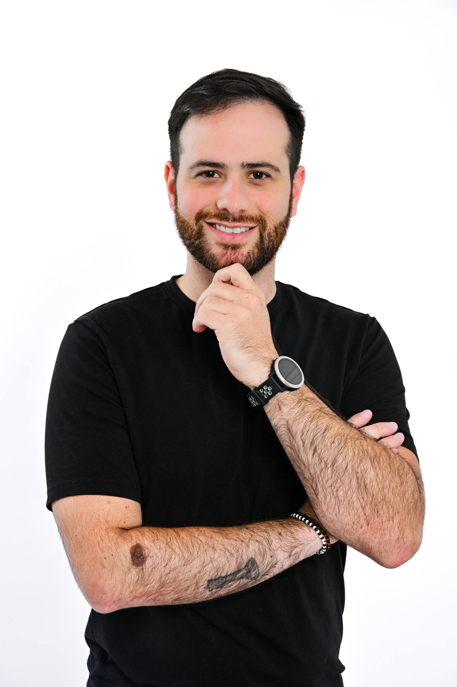
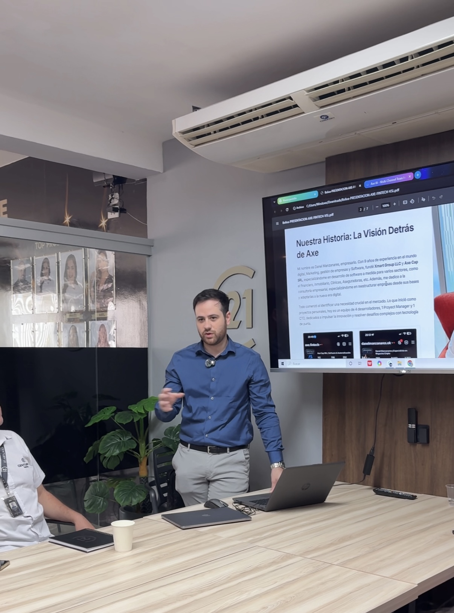
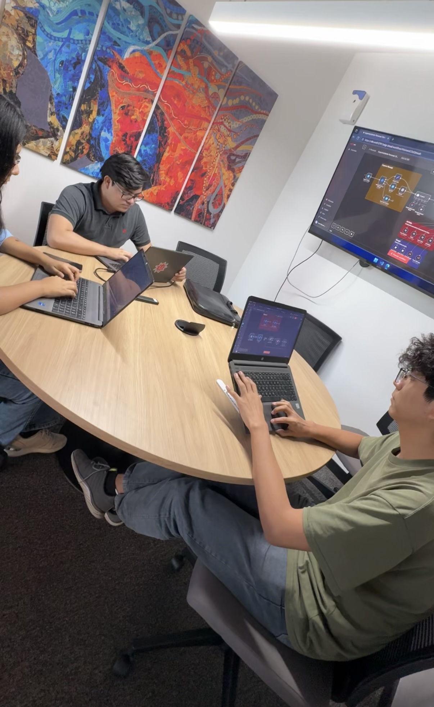
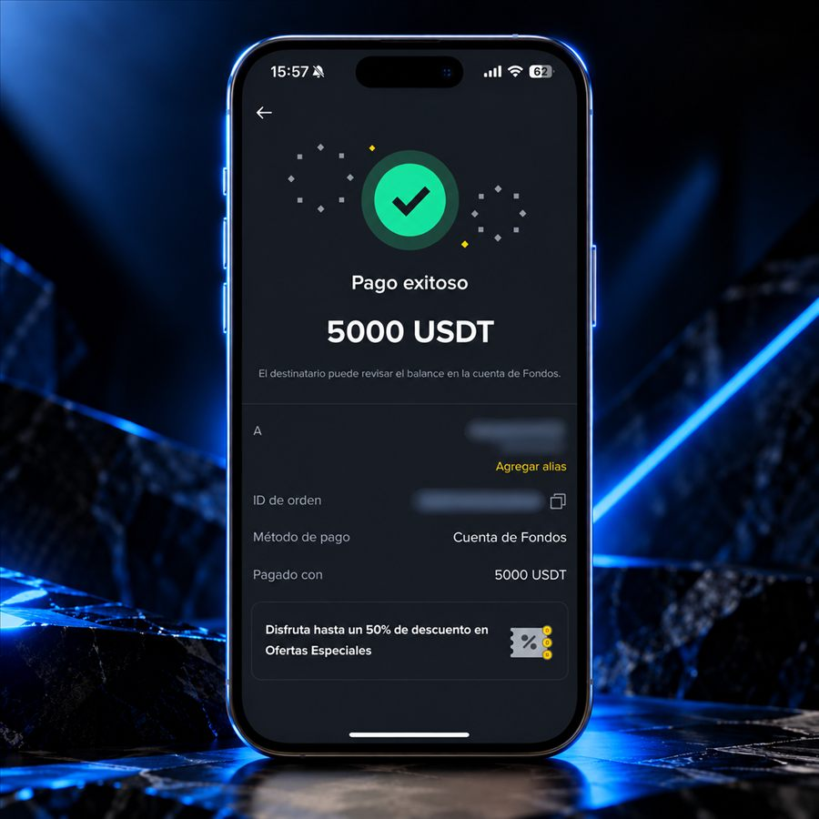
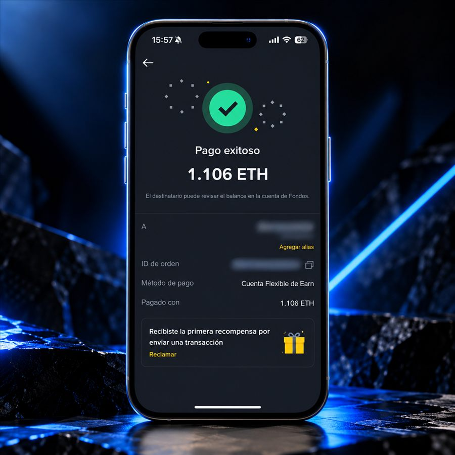
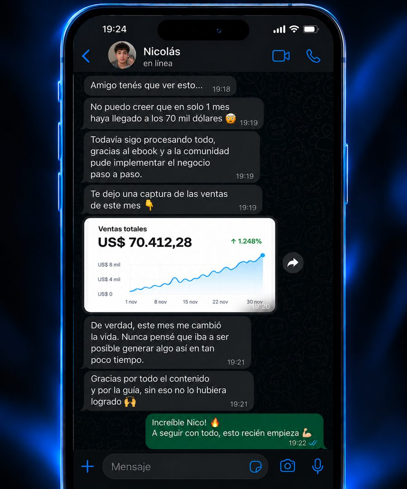
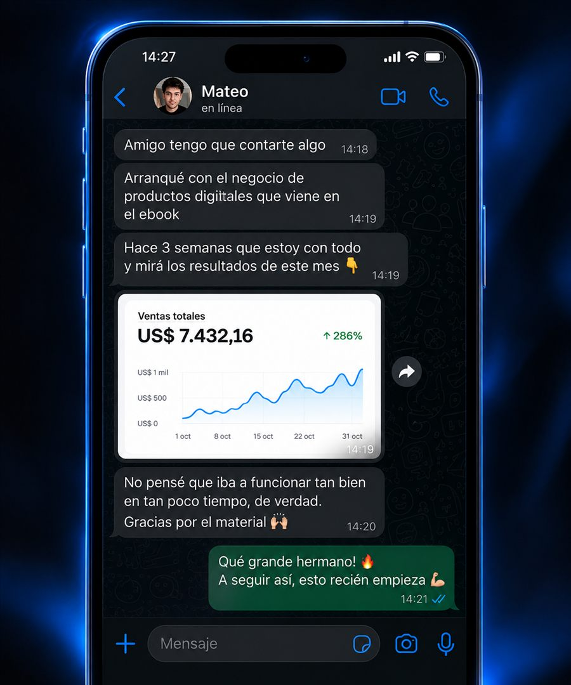

Saltás de una idea a otra
Ves oportunidades, guardás videos y terminás con más dudas que un plan.
Mentor250K te ayuda a elegir un modelo que tenga sentido para vos y convertirlo en un plan de acción, con la experiencia y el acompañamiento de Danel.

No es que te falten ideas. El problema es tener muchas opciones y no contar con criterios claros para elegir una que puedas empezar y sostener.
Ves oportunidades, guardás videos y terminás con más dudas que un plan.
Te faltan criterios para comparar inversión, tiempo, habilidades y mercado.
Sin oferta, cliente ni próximos pasos, la idea queda en pausa.
No necesitás encontrar el negocio perfecto. Necesitás elegir un camino viable y probarlo con foco.
No necesitás otra lista de oportunidades ni una fórmula mágica. Necesitás elegir con criterio y avanzar acompañado, paso a paso.
Entendé los modelos disponibles y reconocé cuál encaja con tu momento.
Contrastá tus recursos, habilidades, tiempo y objetivos para elegir un camino.
Definí a quién ayudás, qué ofrecés y cómo comprobar que hay interés real.
Convertí tus prioridades en acciones semanales y aprendé de lo que pasa.
Tengo 31 años, soy papá de dos y hace más de diez años que emprendo. Nací en Argentina y hoy construyo desde Santa Cruz de la Sierra, Bolivia. Vengo de una familia de clase media: mi mamá fue empleada durante 35 años y mi padrastro pasó de empleado a crear su propia empresa. Entre esos dos caminos entendí desde chico que quería construir algo propio.
Empecé sin saber casi nada. Pasé por distintos trabajos en relación de dependencia que no me duraban, hasta que llegué al multinivel. Ahí descubrí la motivación, el coaching y el desarrollo personal. No me hizo rico; me dio la mentalidad y la disciplina que sostienen lo que vino después.
A los 25 conocí el arbitraje financiero con criptomonedas. Durante dos o tres años operé de forma manual, hasta que vi que ese mismo trabajo podía automatizarse. Fue mi entrada al desarrollo de software y el comienzo de una nueva etapa.
De ahí nació Axe Bot, una empresa que automatiza operaciones de cripto. Con su lanzamiento facturamos USD 250.000 en 90 días y superé el medio millón de dólares en ventas. Ahí entendí que mi lugar estaba en construir.
Después armé mi propia software factory. Desarrollamos soluciones para otras empresas y aceleramos productos propios: Nexo Car, Nexo Dealers, aplicaciones para gastronomía y automatizaciones de marketing. Hoy construyo desde otro país, lejos de mis hijos por momentos; ellos son mi mayor motor. Aprendí a empezar de cero las veces que haga falta. Esa experiencia real es la que llevo a Mentor250K.
Ayudarte a bajar una idea a tierra, validarla y llevarla al mercado con un plan concreto.
Mostrar que con estrategia, tecnología y ejecución se puede construir el negocio que querés.
Entré al multinivel y descubrí el desarrollo personal, la motivación y la disciplina.
Exploré distintos negocios. El sector inmobiliario me dio experiencia en negociación y visión comercial.
Descubrí el arbitraje con cripto y aprendí a operar de forma manual.
Conocí la automatización y di el salto al desarrollo de software.
El lanzamiento generó USD 250K en 90 días y superó USD 500K en ventas acumuladas.
Empecé a crear productos propios y soluciones a medida para empresas.
Nexo Car, Nexo Dealers, gestión gastronómica y Axe IA, desde Santa Cruz de la Sierra.
Acompaño a emprendedores a elegir, validar y construir su próximo negocio.


Comprobantes personales de Binance y mensajes que algunos clientes compartieron sobre sus avances.




Estas capturas documentan experiencias previas y comprobantes personales. Son casos individuales, no resultados garantizados ni una promesa de ingresos de Mentor250K.
La mentoría toma la estructura práctica de Mentor250K y la convierte en un proceso de acompañamiento, adaptado a tu realidad.
Ordenamos tus objetivos, habilidades, tiempo, recursos y restricciones para decidir desde dónde empezar.
Comparamos alternativas y priorizamos un modelo que puedas sostener y poner a prueba.
Definimos cliente, problema, oferta y primeras conversaciones para recoger señales del mercado.
Armamos un plan de 90 días con prioridades, revisión de avances y próximos pasos claros.
Modelo, cliente y oferta.
Mercado y feedback.
Canales y propuesta.
Prospección y conversaciones.
Aprender y mejorar.
Repetir lo que funciona.
La llamada inicial sirve para escuchar tu situación, conocer qué querés construir y evaluar con honestidad si esta mentoría puede ayudarte.
No. El proceso está pensado para ayudarte a entender tus opciones y dar los primeros pasos con estructura. En la llamada vemos tu punto de partida.
No. Mentor250K es el nombre del programa y representa una meta de construcción, no una promesa de ingresos. Los resultados dependen del modelo, el mercado, la ejecución y muchos factores personales.
No. Parte del trabajo es explorar modelos y encontrar una opción que tenga sentido para tus habilidades, recursos y objetivos.
La mentoría combina orientación estratégica y ejecución práctica sobre tu proyecto. En la llamada inicial conversamos sobre el formato y el nivel de acompañamiento adecuado para tu caso.
Los detalles de inversión y duración se conversan en la llamada, una vez que entendemos qué necesitás y si la mentoría es adecuada para vos.
Contame en qué etapa estás y qué te gustaría construir. Agendá una llamada para ponerlo en claro y ver cómo avanzar.
Una charla para entender tu situación y ver si podemos trabajar juntos.
La llamada es una conversación inicial para conocer tu proyecto y próximos pasos.